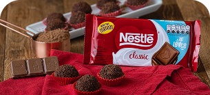

Nestlé (Suiça)
Brownie Trufado Gourmet com Nestlé (Suíça)
Ingredientes:
- 200g de chocolate meio amargo Nestlé
- 3 ovos
- 3 colheres de açúcar
- 1 caixa (200g) de creme de leite
- 100g de creme de leite (para cobertura trufada)
Receita:
-
Derreta o chocolate Nestlé junto com a manteiga até formar um creme liso.
-
Bata as gemas com o açúcar até formar um creme claro e fofo. Misture o chocolate derretido e a baunilha.
-
Incorpore o creme de leite delicadamente à mistura.
-
Leve ao forno pré-aquecido a 180°C por aproximadamente 25 a 30 minutos.
-
Distribua em taças e leve à geladeira por pelo menos 3 horas antes de servir.
-
Aqueça o creme de leite e misture com mais chocolate Nestlé para formar a cobertura trufada.
-
Espalhe a cobertura sobre o brownie já frio e deixe firmar antes de cortar.